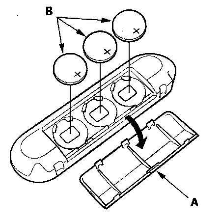

Remote Control: Service and Repair
Wireless Remote Control Battery Replacement
1. Remove the cover (A) from the remote control.
2. Remove the batteries (B).
Replacement Battery: BR3032
3. Confirm that each operation works normally after replacing the batteries.